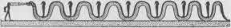

Çizim 19. Osiris, Ölülerin Yargıcı.
Çinliler, Yeşim Bakire ve Altın Delikanlının rehberliğinde Perili Köprü’nün geçilmesini anlatır. Hindular gök kubbeler biçiminde yükselen gökler ve çok katlı bir yeraltı dünyası biçimindeki cehennemleri resmederler. Ruh ölümden sonra kendi kaderine uygun yere bağlanır, geçmiş yaşamının tam anlamını sindirmek ve denetime almak için. Dersini alınca, kendini sonraki deneyim seviyesine hazırlamak üzere dünyaya döner. Böylece yaşam değerinin tüm deneyleri boyunca, kozmik yumurtanın sınırlarını aşıncaya kadar yol alır. Dante’nin ilahi Komedya’ sı bu tür aşamaların tutkulu bir serimidir: “Cehennem,” etin gurur ve eylemlerine bağlı ruhun sefaleti; “Araf’ canlı biçimde ruhsal deneyime geçme süreci; “Cennet,” ruhsal gerçekleşme dereceleri.
Derin ve şaşırtıcı bir yolculuk tasavvuru Mısır’ın Ölüler Kitabı’nda bulunur. Ölen kadın ya da erkek Osiris’le özdeşleşmiştir ve öyle çağrılır. Metin Ra‘ya ve Osiris’e övgü dizeleriyle açılır ve sonra ruhun sargılarının açılışının gizleriyle sürer. “Osiris A.’ya Dil Verme Bahsi’nde,{465} şu cümleyi okuruz: “Saklı ülkedeki yumurtadan çıkıyorum.” Bu, ölüm fikrinin bir yeniden doğuş olarak bildirilmesidir. Sonra, “Osiris A.’nın Dilini Çözme Bahsi”nde uyanan ruh dua eder: “Tanrı Ptah dilimi çözsün ve şehrimin tanrısı ağzımı saran sargıları çözsün.” “Osiris A.’yı Yeraltında bir Bellek Sahibi Kılma Bahsi” ve “Osiris A.’ya Yeraltında Bir Kalp Verme Bahsi” yeniden doğuş sürecini iki aşama ilerletir. Sonra yalnız yolcunun korkunç yargıcın tahtına giden yolda yüzleşmesi ve üstesinden gelmesi gereken tehlikelerin bahisleri başlar.

Çizim 20. Yılan Kheti Yeraltında, Osiris'in bir Düşmanını Ateşle Yok Ediyor.
Ölüler Kitabı mumyayla birlikte zorlu yolun engellerine bir rehber olarak gömülürdü ve gömü sırasında bahisler okunurdu. Mumyanın hazırlanışının bir aşamasında, ölü adamın kalbi çıkarılır ve yerine dualar eşliğinde güneşin simgesi olan altın bir muhafaza içinde bazalt bir bokböceği yerleştirilirdi: “Kalbim, annem, kalbim, annem; dönüşümler kalbim.” Bu “Osiris A.’nın Kalbinin Yeraltında Ondan Alınmasına izin Vermemek Bahsi”nde geçer. Ardından, “Timsahı İtelemek Bahsi”nde şunu okuruz: “Geri çekil ey batıda yaşayan timsah... Geri çekil ey güneyde yaşayan timsah... Geri çekil, ey kuzeyde yaşayan timsah... Yaratılmış şeyle avucumda ve daha varolmamışlar vücudumda. Ey Re, senin büyülü sözlerinle giyinip kuşandım. Üstümdeki gökte ve altımdaki yerde olan sözlerinle...” “Yılanları Püskürtme Bahsi” gelir sonra, ardından “Apşait’i Uzaklaştırma Bahsi.” Ruh bu son demona bağırır: “Uzaklaş benden. Ey dudakları kemiren kişi.” “iki Merti Tanrıçayı Uzaklaştırma Bahsi”nde, ruh niyetini açıklar ve kendini, bunun babanın oğlu olmak olduğunu söyleyerek korur: “...Sektet kayığında parlıyorum, ben Osiris’in oğlu Horus’um ve babam Osiris’i görmeye geldim.” “Yeraltında Havayla Yaşama Bahsi” ve “Yeraltında Yılan Rerek’i Uzaklaştırma Bahsi” kahramanı daha da uzağa götürür ve ardından “Yeraltında Yapılan Katliamları Uzaklaştırma Bahsi”nde büyük açıklama gelir: “Saçım Nu’nun saçı. Yüzüm Disk’in yüzü. Gözlerim Hathor’un gözleri. Kulaklarım Apuat’ın kulakları. Burnum KhestiKlas’ın burnu. Dudaklarım Arpu’nun dudakları. Dişlerim Serget’in dişleri. Boynum göksel tanrıça İsisin boynu. Ellerim Ba-nab-Tattu’nun elleri. Kollarım Neith’in, Sais’in Haraminin kolları. Sırt kemiğim Suti’nin sırt kemiği. Fallusum Osiris’in fallusu. Baldırlarım Kheraba lordlarının baldırları. Kaburgam Korkulacak Kişinin kaburgası. ... Vücudumda bir Tanrı organı olmayan bir organ yok. Tanrı Thoth vücudumu bir araya getirdi ve o günden bu yana Ra’yım ben. Silahlarla engellenemem ve kimse elimi kolumu bağlayamaz...”
Çok daha sonraki, her biri sayısız tanrıyla çevrelenmiş olan beş yüz dönüşmüş Buddha’yla çevrelenmiş Bodhisattva imgesinde olduğu gibi burada da ruh, daha önce ayrı ve dışında olarak düşünülen tanrıları içerecek gücünün ve konumunun tamlığına ulaşır. Onlar kendi varlığının yansıtmalarıdır; ve gerçek haline dönerken hepsi geri kazanılır.
“Havayı Teneffüs etmek ve Yeraltı Sularına Hakim Olmak Bahsi’nde, ruh kendinin kozmik yumurtanın muhafızı olduğunu bildirir: “Selam sana ey tanrıça Nut'un akçaağacı! Şendeki suyu ve havayı sun bana. Hermopolis’teki tahtta oturuyorum ve Büyük Gıdaklayanın yumurtasını gizleyip koruyorum. O büyürse ben büyüyor; o yaşarsa ben yaşıyor; o soluk alırsa ben soluk alıyorum, ben, zafer dolu Osiris A.”
Ardından “Bir İnsanın Ruhunun Yeraltında Ondan Alınmasına İzin Vermemek Bahsi” ve “Yeraltında Su İçmek ve Ateşle Yanmamak Bahsi” gelir ve sonra büyük sona geliriz - ruhun ve evrensel varlığın bir olduğunun anlaşıldığı, “Yeraltında Günün Gelişi Bahsi”: “Ben Dünüm, Bugün ve Yarınım ve ikinci bir kez dogma gücüm var; tanrıları yaratan ilahi saklı Ruhum ben ve Ameti’nin Yeraltının ve Göğün yaşayanlarına ölüm yemekleri veren benim. Doğunun dümeni, ışıklarının görüldüğü yerdeki iki ilahi yüzün sahibiyim ben. Yetişen insanların efendisiyim; karanlıktan çıkan ve varlık biçimleri, içinde ölülerin olduğu evin biçimleri olan efendiyim. Selam size, ebedi istirahatgâhlarına konmuş, onun söylediği şeylere kulak kesilen, tabutun kaidesini saklı yere ulaştıran, Ra’yı kılavuzluk eden ve onu sonsuz yükseklerdeki türbenin en tepesine dek izleyen iki şahin! Selam, dünyanın orta yerinde duran türbenin efendisi. O benim, ben oyum ve Ptah onun göğünü kristalle kaplamış...”
Çizim 21. Ani ve Karısının Öteki Dünya’daki Eşdeşleri Su İçiyor.
Sonra ruh, “Yola Çıkmak ve Dünyaya inmek Bahsi”, “Heliopolis’e Yolculuk ve Orada Tahta Çıkmak Bahsi” “Kendini İstediği Herhangi Biçime Dönüştüren Adamın Bahsi” ve “Osiris’in ilahi Hükümran Prenslerinin Huzuruna Kabul Edilme Bahsi”nde gösterildiği gibi evreni arzu ettiği şekilde düzenleyebilir. Olumsuz İtiraf denen bahisler, kefaret ödeyen insanın ahlaksal saflığını bildirir: “Haksızlık yapmadım ... Zorbalıkla soymadım... Hiç kimseye zorbalık yapmadım... Hırsızlık yapmadım... Erkek ya da kadın kimseyi katletmedim...” Kitap tanrıların övülmesiyle sonlanır ve sonra: “Ra’ya Yaşayan NıbHın Bahsi”, “Bir insanın Geri Dönüp Yeryüzündeki Evini Görmesini Sağlama Bahsi,” “Ruhu Kusursuz Kılma Bahsi” ve “Ra’nın Büyük Güneş Kayığında Yolculuk Etme Bahsi.”{466}